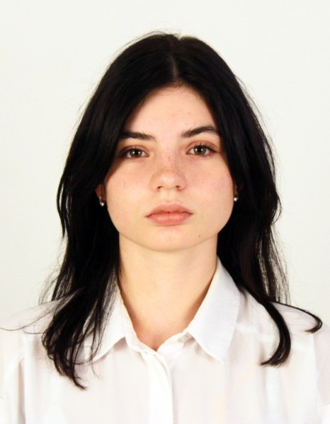

Founded in 2005
The Institute of Archaeological Research operates within Margulan University and contributes to its academic, scientific and cultural heritage mission
The Institute of Archaeological Research at Margulan University brings together archaeological fieldwork, collections management, conservation, interdisciplinary research and student training. Its activities focus on the study, documentation and responsible preservation of the archaeological heritage of Kazakhstan and the wider Eurasian region.
The Institute unites specialised research units, laboratories and collections, supporting cooperation between archaeology, conservation, museum practice and education.

Director of the Institute of Archaeological Research
Timur Smagulov
INDIVIDUAL TEXT
Learn more about the DirectorHead of the UMAY Laboratory
Tetiana Krupa
She is Head the UMAY International Research Laboratory for the Conservation and Restoration of Cultural Heritage. A historian, archaeologist and conservator-restorer, she specialises in archaeological textiles, organic materials, field conservation and interdisciplinary heritage research.
With more than three decades of experience, Tetiana Krupa has worked on archaeological, museum and international projects across Kazakhstan, Ukraine, Kyrgyzstan, Uzbekistan and Azerbaijan and other countries. She leads the Laboratory’s research, conservation, training and international cooperation.
Learn more about the UMAY Laboratory
Research Fellow at the Museum Complex
Natalya Miller (Romancheva)
Natalya Miller (Romancheva) is a Research Fellow at the Museum Complex of the Institute of Archaeological Research. She holds a Master’s degree in Natural Sciences, specialising in Ecology.
Her principal area of professional activity is bioarchaeology, including archaeoentomological and anthropological research, as well as the study of environmental factors affecting the preservation of archaeological materials.
She has four years of experience in field and laboratory research. She has participated in archaeological investigations in the Pavlodar, Ulytau and Kostanay Regions of the Republic of Kazakhstan, as well as in an international Kyrgyz–Japanese archaeological expedition in Kyrgyzstan.
She has contributed to research projects as both a Junior Research Fellow and a Research Fellow. She is the author of four scientific publications addressing biodegradation, the preservation of organic materials, palaeoanthropology and the ecology of archaeological environments.
Learn more about the Centre for BioarchaeologyDirector of the Research Centre for Bioarchaeology
Sergey Titov
Sergey Titov, Dr. Sc., is Director of the Research Centre for Bioarchaeology. He is a zoologist and entomologist specialising in the fauna, taxonomy and biogeography of Lepidoptera in Kazakhstan and Central Asia. His research interests also include palaeoentomology, biodiversity studies and zoological documentation.
He holds bachelor’s and master’s degrees in Biology and completed his doctoral studies at the University of Zagreb. In 2020, he was awarded the degree of Doctor in Biology. He has participated in numerous research projects and is the author and co-author of peer-reviewed publications on taxonomy, animal distribution and biodiversity.
Learn more about the Centre for Bioarchaeology